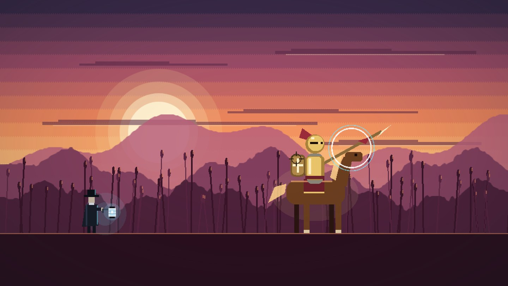
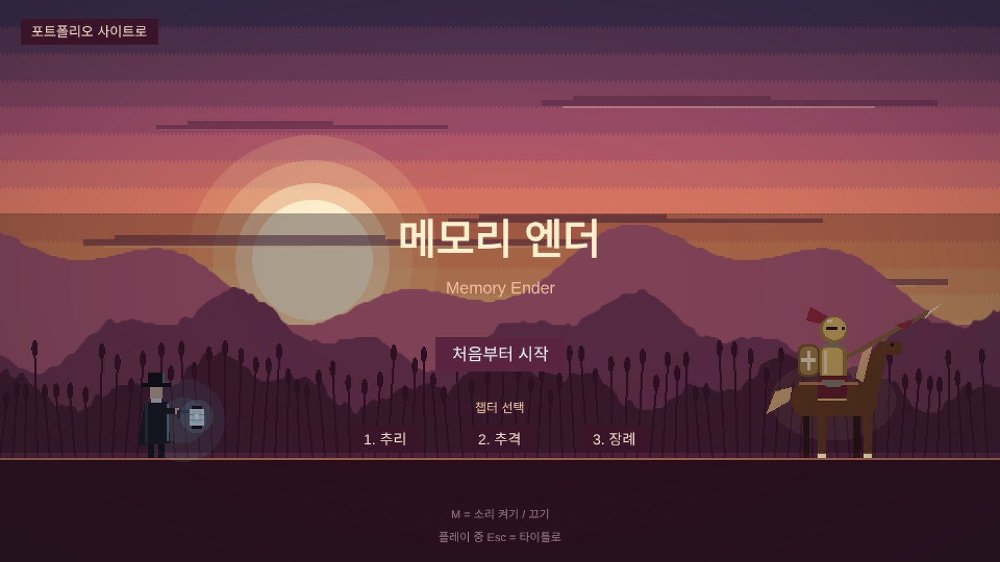
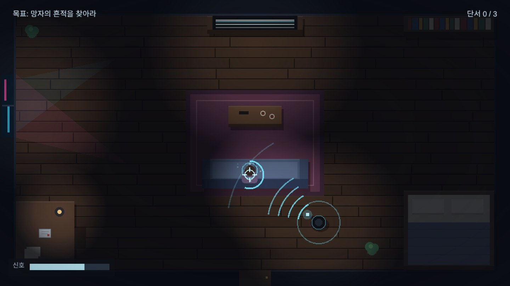
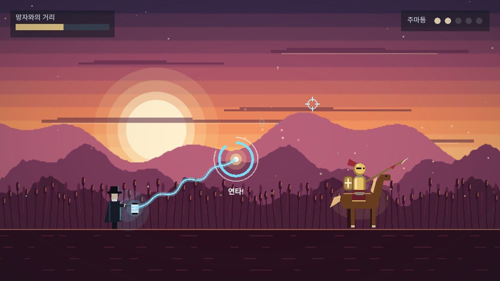
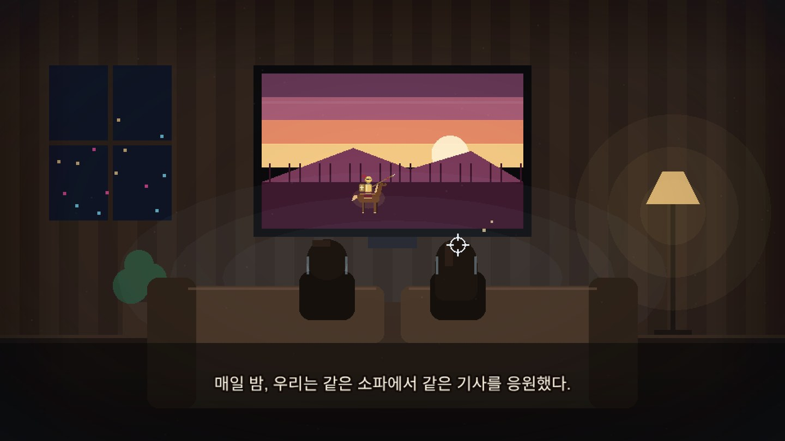
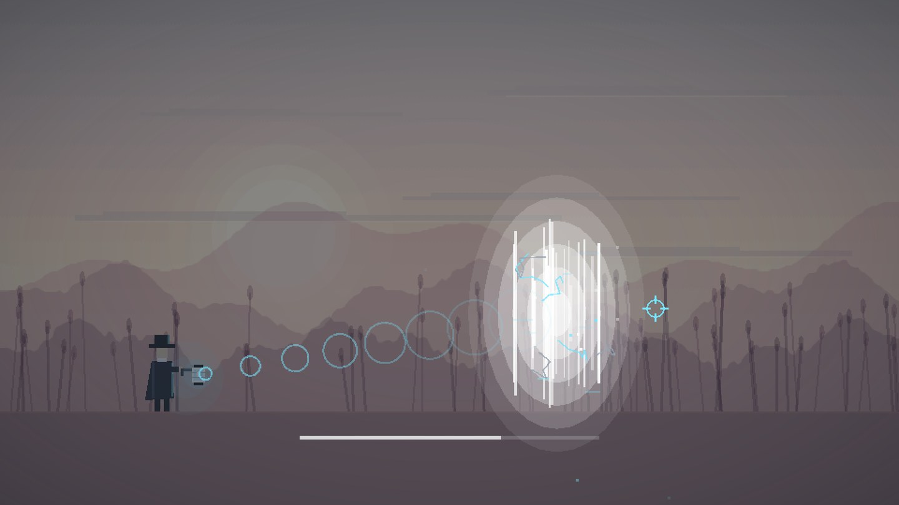
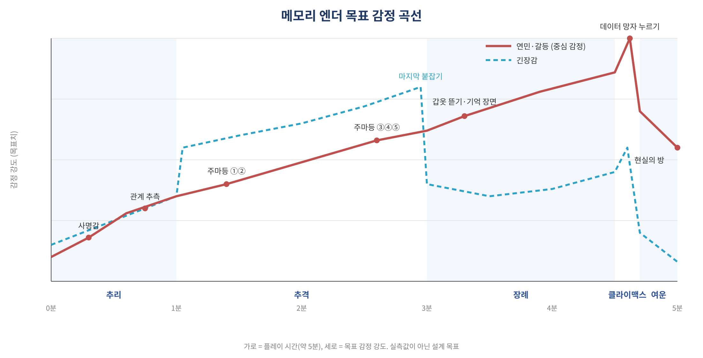
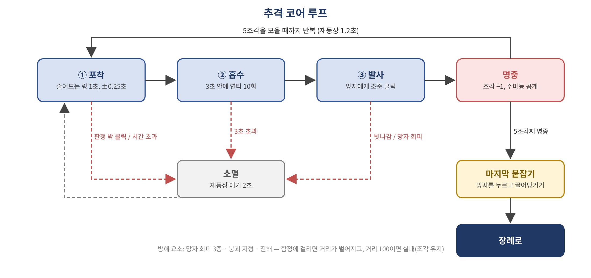

기억을 지우는 장의사가 장례를 거부한 망자를 쫓아, 마지막 장례를 치른다

타이틀의 챕터 선택으로 원하는 구간을 바로 볼 수 있습니다. 클라이맥스는 '3. 장례'.
| 기간 | 2026.11.19 ~ 24 (6일): 기획, 구현, 아트, 웹 배포 |
| 역할 | 1인. 기획, 감정 설계, 튜닝 결정 (구현은 Claude 협업) |
| 장르 | 스토리 중심 액션 어드벤처 (현재 빌드는 망자 한 명의 첫 에피소드, 이후 에피소드로 확장) |
| 사용 툴 | Claude, Claude Code, Git, GitHub Pages |





타이틀, 추리, 추격, 장례, 기억 장면, 클라이맥스. 외부 이미지 없이 코드로 그린 도트 그림이고, 사운드는 브라우저에서 직접 합성했다.
빌드업을 쌓아 클라이맥스에서 터지는 한순간이 핵심 재미이며, 그 순간이 플레이를 계속하게 만든다. 중심 감정은 연민과 갈등이다. 지워야 한다는 걸 알지만 지우고 싶지 않은 마음을, 플레이어가 마지막에 자기 손으로 결정하게 만든다.

실측값이 아닌 설계 목표. 추격 끝에서 긴장감은 내려가고, 장례로 넘어가며 연민, 갈등이 정점까지 올라간다.
| 구간 | 쌓이는 감정 | 기대 장치 | 방해 장치 |
|---|---|---|---|
| 추리 | 사명감에서 관계 추측으로 | 단서 3개로 관계가 조금씩 드러남 (결과, 장소, 동기 순) | 신호로만 위치를 앎, 오답이면 다시 추리 |
| 추격 | 긴박감 + 연민의 시작 | 망자를 맞힐 때마다 기억 문장(주마등) 공개. 웃던 밤에서 싸우기 직전의 밤 순서 | 망자 회피 3종, 붕괴 지형, 잔해 |
| 장례 | 갈등 | 갑옷 파츠를 뜯을 때마다 둘의 기억 장면으로 전환 | 끌어당기는 저항감, 순서 고정 |
| 클라이맥스 | 연민과 갈등의 정점 | 데이터 망자를 누르는 동안 마지막 독백 진행 | 손을 떼면 멈춤. 끝낼지는 플레이어가 쥐고 있음 |

갑옷 5개를 모두 뜯어내면 데이터 망자만 남는다. 조등(장의사의 장례 도구)을 대고 누르고 있는 9초 동안 마지막 독백 3줄이 흐르고, 손을 떼면 멈춘다. 마지막 줄 "다음 편은… 혼자 봐야 할 거 같아."는 추격의 주마등 "다음 편은 내일 같이 보자."를 회수한다. 이후 현실의 방에서 그녀는 혼자 소파에 앉아, 이유 모를 허전함을 느낀다.
| 문제 (플레이하며 느낀 점) | 판단 | 해결 |
|---|---|---|
| 장례가 단순 홀드라 아무 감정도 전달되지 않음 | 지우는 행위 자체가 감정을 만들어야 한다 | 기사의 갑옷 파츠를 정해진 순서로 직접 붙잡고 뜯어내는 조작으로 재설계 |
| 포착 링 2초가 늘어져 긴박감이 없음 | 추격의 리듬을 해치는 늘어짐 제거 | 링 2초를 1초로, 흡수는 홀드에서 3초 안에 연타 10회로 |
| 가시, 함정, 공격이 겹쳐 무조건 맞는 순간 | 불합리하게 지면 쌓아 온 몰입이 깨진다 | 기믹이 겹치지 않게 배치, 회피 전 0.4초 예고 |
| 문구만으로는 둘에게 무슨 일이 있었는지 와닿지 않음 | 보여 주는 것이 읽히는 것보다 강하다 | 파츠를 뜯을 때마다 기억 장면으로 화면 전환 (5초) |
| 주마등 문장이 흡수 완료 시점에 나옴 | 망자가 맞은 타이밍에 나와야 한다 | 공개 시점을 명중 순간으로 이동 (2.6초) |
전체 35항목은 게임 기획서 7-5~7-7에 변경 전, 후 수치와 이유를 함께 기록했다.
장례는 처음에 버튼을 누르고 있는 단순 홀드였다. 지우는 행위 자체가 감정을 만들어야 한다고 판단해, 갑옷 파츠를 정해진 순서로 직접 뜯어내는 조작으로 다시 설계했다. 마지막 9초의 누르기는 끝낼지를 플레이어가 쥐고 있게 하는 장치라 끝까지 남겼다.